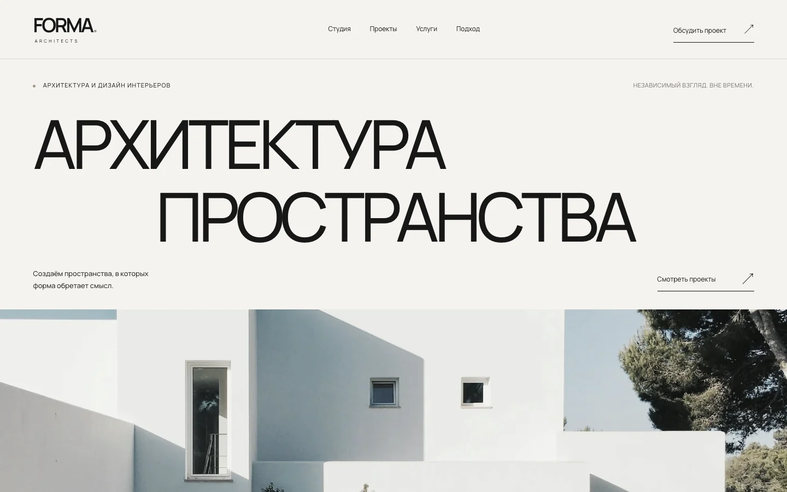

BARBER CULT
Сайт барбершопа

Демонстрационная концепция
Тёмная эстетика, выразительная типографика и характер бренда. Сайт, построенный на ритме крупных заголовков и фотографий ремесла.
Два проекта. Два разных характера. Примеры того, как NOVARY соединяет дизайн, структуру и разработку.
Демонстрационные концепции: от первого впечатления до работающих сценариев.
Сайт барбершопа
Демонстрационная концепция
Тёмная эстетика, выразительная типографика и характер бренда. Сайт, построенный на ритме крупных заголовков и фотографий ремесла.
Сайт архитектурной студии

Демонстрационная концепция
Светлая редакционная эстетика. Свободная композиция, архитектурная фотография и внимание к пространству между элементами.
Оба проекта созданы для портфолио NOVARY. Это вымышленные бренды, а не клиентские заказы.
Расскажите, что хотите создать и для кого. Уточним детали, предложим формат и определим следующий шаг.
Готовое техническое задание не требуется.
Написать в TelegramTelegram-канал пока недоступен. Пожалуйста, зайдите позже.